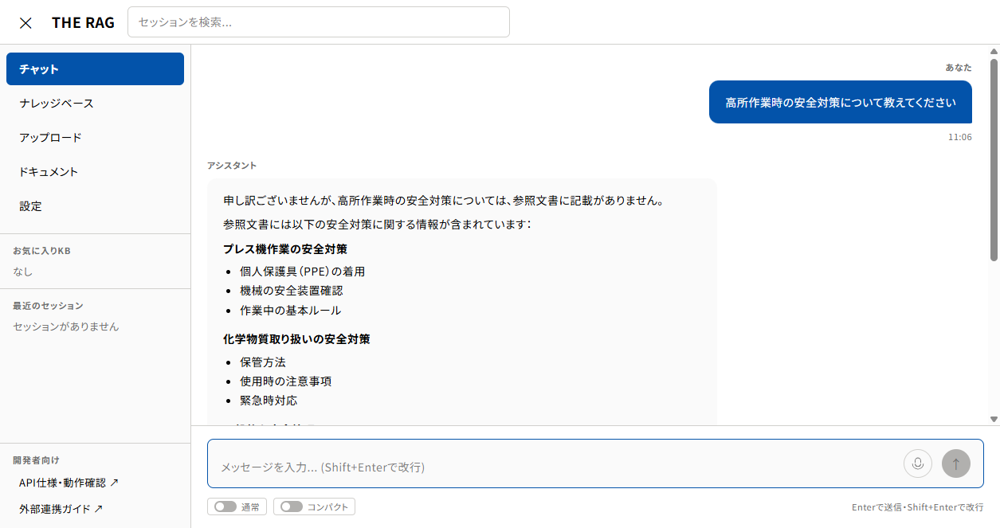
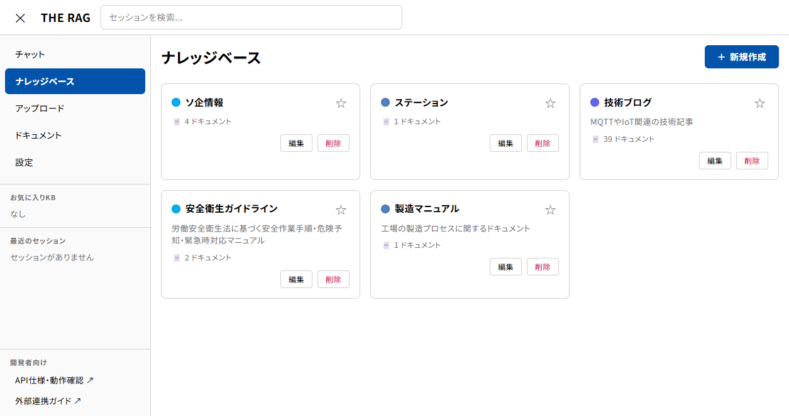
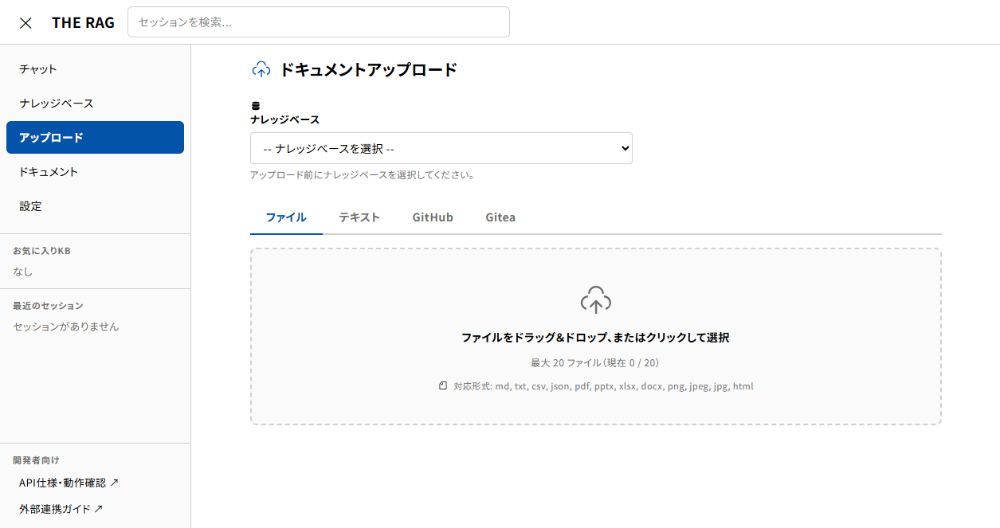
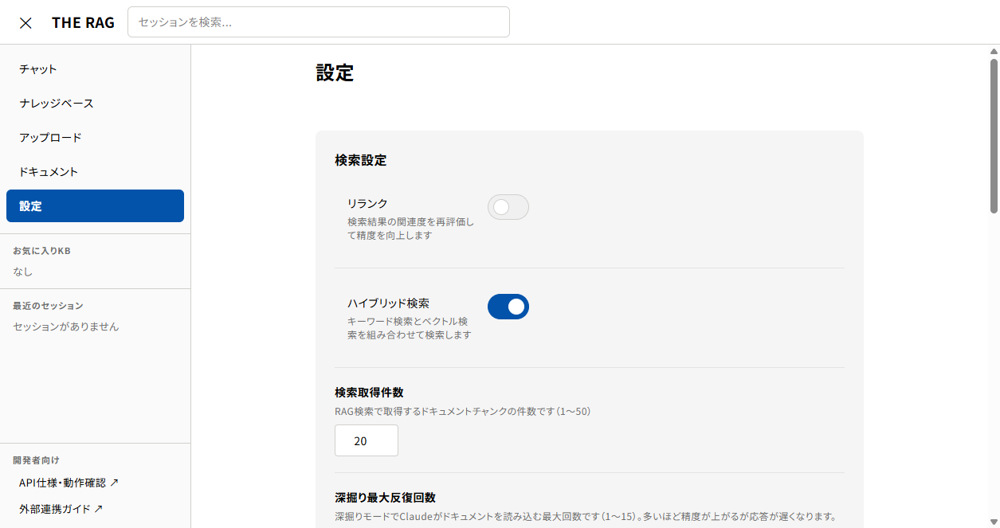

THE RAG
社内ナレッジ検索AIチャット
聞くだけで、必要な情報にアクセス
🤖 AIチャット
📄 ドキュメント管理
🔍 ベクトル検索
🏭 製造現場対応
2026年4月
WHAT IS THE RAG?
社内の知識に、
聞くだけ
でアクセス
マニュアル、手順書、規格書、議事録…
散らばった社内ドキュメントをAIが横断検索し、
自然な日本語で回答
します。
THE RAG
02 / 15
SECTION 01
基本機能
AIチャットで社内ナレッジに質問し、
根拠付きの回答をリアルタイムで受け取れます。
THE RAG
03 / 15
AIチャットで質問
社内ドキュメントを根拠に、AIがリアルタイムで回答
THE RAG
🤖 AI Powered
自然な日本語で
なんでも聞ける
ナレッジベースを選んで質問するだけ
AIがリアルタイムにストリーミング回答
参照ドキュメントを根拠として表示
音声入力にも対応（マイクボタン）
回答の品質を星で評価・フィードバック

THE RAG
04 / 15
2つの検索モード
目的に応じて使い分け
THE RAG
通常モード
⚡
すばやく回答
ベクトル検索で関連チャンクを取得し、AIが即座に回答を生成します。シンプルな質問に最適です。
応答が速い
一問一答に向いている
手順の確認、用語の意味など
深掘りモード
🔬
徹底的に調査
AIが自律的にドキュメントを読み込み、複数回の検索を繰り返して回答精度を高めます。
最大5回まで自動で深掘り
複雑な質問に強い
原因調査、比較分析など
THE RAG
05 / 15
SECTION 02
ドキュメント
管理
マニュアルや手順書をアップロードすると、
AIが自動で解析・タグ付け・インデックス化します。
THE RAG
06 / 15
ナレッジベース
目的別にドキュメントを整理・管理
THE RAG
用途ごとに
ナレッジを分類
ナレッジベースを作成して、関連するドキュメントをグループ化。チャット時に検索対象を絞り込めます。
「安全衛生ガイドライン」「製造マニュアル」など用途別に作成
お気に入り登録でサイドバーからすぐアクセス
ドキュメント数を一覧で確認

THE RAG
07 / 15
ドキュメントアップロード
多様な形式に対応、ドラッグ&ドロップで簡単登録
THE RAG
かんたん
ドキュメント登録
ファイルをドラッグ&ドロップするだけで登録完了。あとはAIが自動でインデックスを作成します。
PDF
Word
Excel
PowerPoint
Markdown
テキスト
画像
HTML
最大20ファイルを一括アップロード
テキスト直接入力にも対応
GitHub / Gitea リポジトリから自動同期も可能

THE RAG
08 / 15
自動インデックス処理
アップロード後、AIが全自動でドキュメントを検索可能にします
THE RAG
1
変換
PDF・Wordなどを
テキストに変換
→
2
タグ付け
AIが内容を分析し
自動でタグを付与
→
3
分割
検索に最適な
チャンクに分割
→
4
ベクトル化
意味を数値化し
ベクトルDBに格納
→
5
検索可能
チャットから
質問できる状態に
💡 すべて自動で処理されます。ユーザーはアップロードして待つだけです。
THE RAG
09 / 15
SECTION 03
パーソナライズ
自分だけの辞書や設定で、
より正確な回答を得られます。
THE RAG
10 / 15
設定とカスタマイズ
個人辞書・検索設定・プロファイルで回答精度を向上
THE RAG
あなた専用に
チューニング
個人辞書
— 社内略語や独自用語を正式名称にマッピング（例: 「SA」→「システムアーキテクト」）
検索設定
— リランク、ハイブリッド検索のON/OFF、取得件数の調整
行動プロファイル
— よく参照するラインや工程をAIが自動学習
ニックネーム
— チャット内で呼ばれる名前を設定

THE RAG
11 / 15
SECTION 04
使い方の流れ
3つのステップで、すぐに使い始められます。
THE RAG
12 / 15
かんたん3ステップ
誰でもすぐに使えます
THE RAG
1
選ぶ
📚
ナレッジベースを選択
サイドバーまたはナレッジベース一覧から、質問したいカテゴリを選びます。
2
聞く
💬
質問を入力
知りたいことを自然な日本語で入力。音声入力も使えます。
3
得る
✅
回答を受け取る
AIがドキュメントを根拠に回答。参照元も確認できます。
THE RAG
13 / 15
THE RAG でできること
まとめ
THE RAG
🔍
すばやく検索
マニュアルを探し回る必要はありません。質問するだけで、必要な情報がすぐに見つかります。
🤖
AIが要約・回答
長い文書を読む手間なし。AIが要点を整理して、分かりやすく回答します。
📄
根拠を確認
回答の参照元ドキュメントを表示。情報の出典を確認して安心して活用できます。
🏭 製造現場のナレッジを、チーム全員がいつでも活用できる環境を実現します。
THE RAG
14 / 15
Thank
You.
ご質問・ご要望がございましたら、
お気軽にお問い合わせください。
THE RAG — 社内ナレッジ検索AIチャット